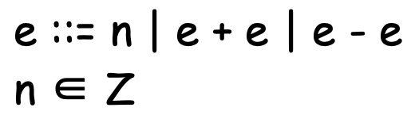

충남대학교 컴퓨터공학과 이성호 교수님의 "프로그래밍 언어 개론" 강의를 필기한 내용입니다.
다소 잘못된 내용과 구어적 표현 이 포함되어 있을 수 있습니다.
Concrete, Abstract syntax
- Concrete syntax : 구체적 문법(우리가 사용)
- RE, CFG를 구체적 문법이라고 생각하면 된다
- Abstract syntax : 추상(요약) 구문(컴파일러가 사용)
- AST나 BNF(Backus-Naur form)으로 명시된 Abstract syntax를 의미한다
AST
- 구문은 또 다른 구문들로 정의된다는 재귀적 특징은 트리에서 트리의 subtree 또한 트리라는 재귀적 특징과 닮아있으므로 프로그래밍 언어의 구문을 트리로 표현하는 것을 효과적이다
- AST를 쓰는 이유: 불필요한 문법적 디테일을 제거
- 언어마다 다른 구체적 문법적인 것들을 배제하고 어떤 것들을 받아서 순수하게 어떤 동작을 하는지를 명시하는 것이 추상 문법이다
- 뭐 함수를 선언할때 def를 쓸건지, function을 쓸건지 하는 것들은 세부적인 디테일이므로 언어와 독립적인 Abstract syntax를 정의하느데에는 필요 없기 때문
- 또한 2 + 1, 02 + 001같은 의미는 같지만 형태만 다른 구제적 문법들을 별도로 정의할 이유가 없기 때문에
- AST의 경우에는 우리가 정의하는 것이기 때문에 구조가 하나로만 도출되는 Parse Tree와는 다르게 다양한 구조를 가질 수 있다
수업에서 Abstract Syntax를 정의한 방식
- AST : 부모노드에 얘가 어떤 연산인지를 적어주고, 자식노드에 어떤 인자들이 연산되는 지를 적어주는 식으로 트리를 구성했다
- BNF AS : Abstract Syntax를 BNF로 기술한 것이다.

- (e ::= n) 은 AST (Num - n)와 같다
- (e ::= e + e) 은 AST (Add - e e)와 같다
- (e ::= e - e) 은 AST (Sub - e e)와 같다
- 저 표현은 이 세개의 트리를 합쳐놓은 것과 같은 표현이 되며 각각의 트리를 Langauge construct라고 한다
AST 정의 수업에서의 예시 - 언어 AE 기술하기
- 언어 AE는 Arithmetic Expression, 즉, 정수의 합과 차를 표현하는 언어이다
- 집합 E는 언어 AE의 모든 AST의 집합이다
- n이 정수일때, 이 정수는 Num이라는 parent node를 가진다
- Num은 AE의 숫자를 표현 하는 노드
- 또한 Add노드도 두개의 E의 원소를 자식으로 받는 AE의 덧셈을 표현 하는 노드이다
- Sub도 마찬가지로 AE의 뺄셈을 나타내는 노드 이다
- 트리를 보면 아래서부터 위로 연산이 되므로 연산의 우선순위를 나타내는 괄호는 이런 상하관계를 시용하면 표현할 수 있다
- 매번 트리를 그리기는 귀찮으므로 이것을 코드 형식으로 표기할 수도 있다
- ’n’은 Num 트리를 가리키고 ‘e1 + e2’는 Add트리, ‘e1 - e2’는 Sub트리를 나타낸다.
- 여기서 +와 -는 연산자가 아니라 그냥 기호일 뿐 이다
- 이제 코드 표기법과 BNF표기법을 이용해 트리를 표기할 예정이랜다
- 이 코드 표기법에서는 트리의 상하관계 즉, 우선순위를 나타낼 때 괄호를 사용하는 것도 암묵적으로 허용한댄다
- 이때의 n, e1, e2를 metavariable(고차원 변수) 라고 한다
- 실제 프로그래밍 언어에서의 변수와는 다르게 정의된 어떤것으로든 치환될 수 있는 것?
- 뭔지 감만 오제?
Semantics
- 프로그래밍 언어의 Semantics : 이 프로그래밍 언어는 어떻게 계산, 실행되는지
- 해당 프로그래밍 언어로 구현된 모든 프로그램의 실행시 행동을 정의?
- 프로그램적 Semantics : 이 프로그램은 어떻게 계산, 실행되는지
- 약간 이런 느낌인거 같다 : 프로그래밍 언어의 Semantics는 더 포괄적인 실행을 의미하는 거고 프로그램의 Semantics는 약간 해당 프로그래밍 언어로 표현된 하나의 코드 예시? 가 어떻게 실행되는지
- 이 프로그램적 Semantics는 언어적 Semantics에 기반을 두게 된다
- 아닌가
프로그래밍 언어의 Semantics
- AST를 기반으로 한다
- 불필요한 문법적 디테일을 무시할 수 있고, AST의 각 구문별로 의미를 정의할 수 있으므로
- AST하나당 하나의 대응되는 Sementics를 정의한다는 말이다
수학적 Semantics 정의
- Semantics가 자연어로 정의되면 읽는 사람마다 다르게 받아들이는 모호성을 야기할 수 있으므로 이것을 수학적으로 표현해야 한다
Binary relation을 이용한 수학적 정의
- binary relation은 걍 단순하게 생각해서 (키, 벨류)로 표현되는 키-벨류 쌍이라고 생각하면 된다
- 집합 A의 원소를 키로 하고 집합 B의 원소를 벨류로 할 때 이것으로 만들 수 있는 모든 키-벨류 쌍의 집합을 AXB라고 한다
- AXB의 부분집합 R에 대해 이 R을 키-벨류간의 관계를 나타내는 기호라고 한다면
- aRb라는 것은 “a가 A의 원소이고 b가 B의 원소이고 (a, b)쌍도 R의 원소이다”라는 것으로 정의할 수 있다
- 걍 뭔소린지 모르겠으면 aRb라는 것은 a와 b의 관계가 R이다라고 생각해도 된다
- 피피티에서 아랫쪽 화살표는 “좌항이 우항으로 계산된다”라는 의미로 받아들이면 된다
Inference Rule도 이용하기
- Inference Rule : 분자에는 전제를 쓰고 분모에는 결론을 쓰는 형태의 기호
- 분자의 전제가 전부 참이라는 전제 하에 분모가 참이 된다
Big / Small step, Operational
- 프로그램의 계산을 중간단계를 다 생략하고 초기상태와 결과만 나타내는 것을 Bigstep이라고 한다
- 반면에 중간단계를 생략하지 않은 계산법을 Smallstep이라고 한다
- 이 계산을 머릿속에 존재하는 계산기가 계산해주는걸로 생각하고 표현하는 것을 Operational이라고 한다
- ㅅㅂ small step이랑 orerational차이는 모르곘는데 시험에 나오면 그냥 operational이라고 쓰자
Proof tree
- 어떤 것의 증명 과정을 Inference rule을 이용하여 표현한 하나의 자료구조이다
- 결론을 root로 그것의 전제를 차례로 파고들면서 더 이상 증명할 게 없을 때까지 파고드는 것이다
- 부모노드와 자식노드는 inference rule로 연결하고 따라서 자식노드가 모두 참이면 부모노드도 참이 되는 구조를 가지게 된다
- 일반적인 트리와 비슷하지만 root가 맨 아래에 위치하고 부모-자식 간 관계가 전제와 결론의 관계라는 특징을 가진다